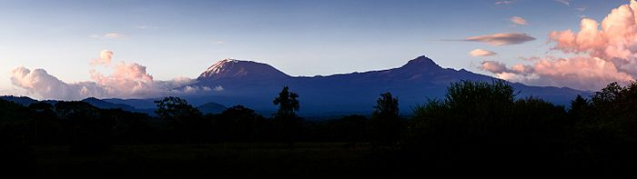

about Mt.kilimanjaro
Mount Kilimanjaro (/ˌkɪlɪmənˈdʒɑːroʊ/)[8] is a dormant volcano in Tanzania. It has three volcanic cones: Kibo, Mawenzi and Shira. It is the highest mountain in Africa and the highest single free-standing mountain in the world: 5,895 metres (19,341 ft) above sea level and about 4,900 metres (16,100 ft) above its plateau base.
Kilimanjaro is the fourth most topographically prominent peak on Earth. The first people known to have reached the summit were Hans Meyer and Ludwig Purtscheller, in 1889. It is part of Kilimanjaro National Park and is a major climbing destination. Because of its shrinking glaciers and disappearing ice fields, it has been the subject of many scientific studies.

history
The mountain may have been known to non-Africans since antiquity. Sailors' reports recorded by Ptolemy mention a "moon mountain" and a spring lake of the Nile, which may indicate Kilimanjaro; although available historical information does not allow differentiation among others in East Africa like Mount Kenya, the mountains of Ethiopia, the Virunga Mountains, the Rwenzori Mountains, and Kilimanjaro. Before Ptolemy, Aeschylus and Herodotus referred to "Egypt nurtured by the snows" and to a spring between two mountains, respectively. One of these mentions two tall mountains in the coastal regions with a valley with traces of fire between. Martín Fernández de Enciso, a Spanish traveller to Mombasa who obtained information about the interior from native caravans, said in his Summa de Geografía (1519) that west of Mombasa "stands the Ethiopian Mount Olympus, which is exceedingly high, and beyond it are the Mountains of the Moon, in which are the sources of the Nile".[21][34]:1–5[1]:114
about its name
The origin of the name Kilimanjaro is not known, but a number of theories exist. European explorers had adopted the name by 1860 and reported that Kilimanjaro was the mountain's Kiswahili name.[23] The 1907 edition of The Nuttall Encyclopædia also records the name of the mountain as Kilima-Njaro.[24]
Johann Ludwig Krapf wrote in 1860 that Swahilis along the coast called the mountain Kilimanjaro. Although he did not offer any support,[25] he claimed that Kilimanjaro meant either mountain of greatness or mountain of caravans. Under the latter meaning, kilima meant mountain and jaro meant caravans.[23] Jim Thompson claimed in 1885, again without support,[25] that the term Kilima-Njaro "has generally been understood to mean" the mountain (kilima) of greatness (njaro). He also suggested "though not improbably it may mean" the white mountain.[26]